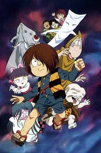

Gegege no Kitarou

From Doug Cranston:
Gegege no Kitarou is a comic-horror manga and anime. I have heard good things about the anime, but have only read
two volumes of the manga. The story goes like this: Kitarou's dad was a ghost hunter and got killed by a demon.
Kitarou was just a baby, and his dad wanted to watch over him. So, his spirit took out one of Kitarou's eyes (the left one)
and he used it as a body (he's the little eyeball). Kitarou and his dad are like ghostbusters and kill evil spirits, and they
live in the woods with a bunch of traditional Japanese spirits like kappas and tengu, etc. Kitarou is sort of like an
undead. He attacks mostly by kicking his geta at demons or using his poncho to attack, but if necessary, he uses his
body parts to attack, like his hair, his eye, which explode on contact. He also has to deal with the Rat Man, a hooded
figure who isn't evil, but usually tries to cheat him or make deals with the evil spirits. Basically, every story has an
information page that teaches you all about Japanese mythology and ghosts. Unfortunately, I can't read much Japanese,
so I don't have the full story, but that's about it.
Other Resources
Anime Video Game Resource Center © 1998 by Luis A. Cruz